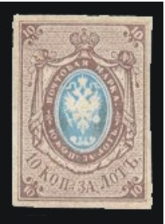
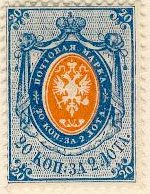
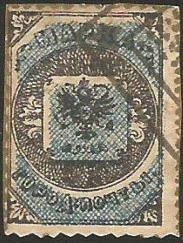
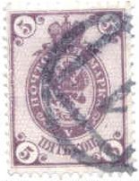
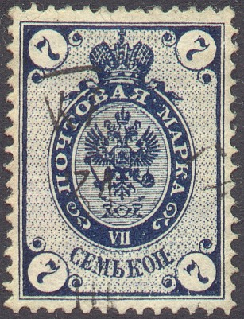
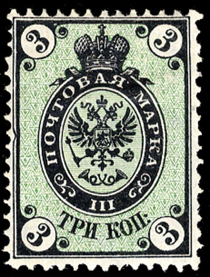

(Reduced size)
Return To Catalogue - Russia overview - Eagle issues, small sizes 1858-1922, part 2 - Eagle issues, large sizes
Note: on my website many of the
pictures can not be seen! They are of course present in the
catalogue;
contact me if you want to purchase the catalogue.

(Reduced size)
10 k brown and blue
Proof of the watermark '1'
This stamp has a very peculiar watermark consisting of a large
white '1' (it was applied using thickened paper). Forgeries
exist, made from the perforated stamps issued later, by cutting
the perforation and/or imitating the watermark. The imitation of
the watermark has been done in several ways (source: The Sowjet
Philatelist'):
1) through applying fat at the backside of the stamp (except for
the number of the watermark),
2) though applying other dark substances at the backside of the
stamp (even milk seems to have been used!),
3) adding a layer of paper at the backside pretending to be the
watermark (dangerous on letters).
4) Embossing of the watermark
Forged mint stamps exist by removing the pencil mark. Total forgeries also seem to exist (source: 'Russian post in the Empire, Turkey, China and the post in the kingdom of Poland' by S.V.Prigara), with crude lithographed design and the background consisting of vertical lines instead of dots and lines.
Value of the stamps |
|||
vc = very common c = common * = not so common ** = uncommon |
*** = very uncommon R = rare RR = very rare RRR = extremely rare |
||
| Value | Unused | Used | Remarks |
| 10 k | RRR | R | Cancelled with pencil mark (most usual) or ordinary cancel |
This stamp was issued 1st January 1858. These stamps were supposed to have been issued perforated, but the perforating machine came too late and was not functioning well (source: 'Russian post in the Empire, Turkey, China and the post in the kingdom of Poland' by S.V.Prigara). Therefore, the stamps were issued in imperforate state first (3 million stamps). For perforated stamps, see the next issue. These stamps were issued in sheets of 100 (4 panes of 25 stamps separated by a white space).
It was prescribed by the post office to cancel the stamps with pencil marks. Due to the fact that these could easily be removed it was then decided on 26th February 1858 to cancel them with either dots cancels (with numerals in the center) or cancels that were already used before stamps were issued.
Each number for the numeral cancels corresponded to a particular post office. Some examples of numeral cancels:

Circle consisting of dots with numeral in the center ('2' in this
case).
Similar cancels with a numeral sorrounded by dots, but in an elliptic shape also exist (frontier post offices).
Hexagonal cancel consisting of dots with a number in the center,
used for railway post offices and travelling post offices.
There exist other numeral hexagonal cancels, closely resembling the above numeral cancel, but with the 'points' at horizontally (the above one has two points above and below the numeral, thus vertically). The horizontal ones were cancels for village post offices.
Numeral cancels consisting of dots which form a rectangle were also used.
Other numeral cancels with a numeral in a dotted pattern in the shape of a triangle also exist (for post stations).
Numeral cancels in four concentric circles, in a square consisting of several lines, in a octogonal consisting of several lines and letters ('D.W.', 'D.P.' or 'D.B.') in four concentric circles were used in Poland.
'Reprint' made for the Salon der Philatelie in Hamburg (1984)





7 k grey and red (straight value label, 1879) 8 k grey and red (straight value label, 1875) 10 k brown and blue (curved value label) 10 k brown and blue (straight value label, 1875) 20 k blue and orange (curved value label) 20 k blue and orange (straight value label, 1875) 30 k red and green (curved value label)
A similar stamp with inscription 'ZA LOT KOP 10' was issued for Poland in 1860.
Value of the stamps |
|||
vc = very common c = common * = not so common ** = uncommon |
*** = very uncommon R = rare RR = very rare RRR = extremely rare |
||
| Value | Unused | Used | Remarks |
| With watermark 'Number', perforated 14 1/2 (1858) | |||
| 10 k | RR | *** | Watermark '1', curved value label |
| 20 k | RRR | RR | Watermark '2', curved value label |
| 30 k | RRR | RR | Watermark '3' |
| No watermark, perforated 12 1/2 (1858) | |||
| 10 k | *** | * | Curved value label |
| 20 k | *** | *** | Curved value label |
| 30 k | R | *** | |
| No watermark, perforated 14 1/2 (1865) | |||
| 10 k | *** | * | Curved value label |
| 20 k | R | ** | Curved value label |
| 30 k | R | ** | |
| Watermark 'Wavy
lines', perforated 14 1/2 (1866) Horizontally or vertically laid paper |
|||
| 7 k | * | c | 1879, exists with fiscal watermark 'Hexagons': RR (issued in Perm) |
| 8 k | * | c | 1875 |
| 10 k | *** | c | Curved value label |
| 10 k | *** | * | Straight value label (1875), horizontally laid paper only |
| 20 k | *** | ** | Curved value label |
| 20 k | *** | * | Straight value label (1875), horizontally laid paper only |
| 30 k | R | *** | |
The first stamps have a very peculiar watermark consisting of
a large white number (it was applied using thickened paper).
Forgeries exist, made from the unwatermarked stamps of the later
issues. The imitation of the watermark has been done in several
ways (source: The Sowjet Philatelist'):
1) through applying fat at the backside of the stamp (except for
the number of the watermark),
2) though applying other dark substances at the backside of the
stamp (even milk seems to have been used!),
3) adding a layer of paper at the backside pretending to be the
watermark (dangerous on letters).
4) Embossing of the watermark.
Inverted center, stamp once belonged to Ferrari.
According to the 'Russian post in the Empire, Turkey, China and the post in the kingdom of Poland' by S.V.Prigara, crude forgeries of the 30 k stamp (even imperforate) exist.

Nr 1 in rectangles and Nr 1 in octogonals, numeral cancels used
in Poland.


5 k black and blue
This stamp has perforation 12 1/2. This stamp was intended to be used in St.Petersburg and Moscow, but is also known to be used in other cities.
Value of the stamps |
|||
vc = very common c = common * = not so common ** = uncommon |
*** = very uncommon R = rare RR = very rare RRR = extremely rare |
||
| Value | Unused | Used | Remarks |
| 5 k | *** | R | |

Black on coloured background
1 k yellow and black 2 k red and black (1875) 3 k green and black 5 k lilac and black
These stamps have an underprint with the value indicated as well, 'I' in the 1 k, '2 II' in the 2 k, '3 III' in the 3 k and 'V' in the 5 k values as shown here:
Value of the stamps |
|||
vc = very common c = common * = not so common ** = uncommon |
*** = very uncommon R = rare RR = very rare RRR = extremely rare |
||
| Value | Unused | Used | Remarks |
| No watermark, perforated 14 1/2 (1865) | |||
| 1 k | R | ** | |
| 3 k | *** | *** | |
| 5 k | R | *** | |
| Watermark 'Wavy
lines', perforated 14 1/2 (1866) Horizontally or vertically laid paper |
|||
| 1 k | c | c | |
| 2 k | * | c | 1875 |
| 3 k | * | c | Exists with the underprint of the 5 k value: *** |
| 5 k | * | c | |
One colour only (1883) without thunderbolts below the eagle


1 k yellow 2 k green 3 k red 5 k lilac 7 k blue
Value of the stamps |
|||
vc = very common c = common * = not so common ** = uncommon |
*** = very uncommon R = rare RR = very rare RRR = extremely rare |
||
| Value | Unused | Used | Remarks |
| Watermark 'Wavy lines', perforated 14 1/2 (1883) | |||
| 1 k | c | vc | |
| 2 k | c | c | Shades of green |
| 3 k | * | c | |
| 5 k | * | c | |
| 7 k | * | vc | |
One colour only (1889) with small thunderbolts below the eagle




1 k yellow 2 k green 3 k red 5 k lilac 7 k blue
Value of the stamps |
|||
vc = very common c = common * = not so common ** = uncommon |
*** = very uncommon R = rare RR = very rare RRR = extremely rare |
||
| Value | Unused | Used | Remarks |
| Watermark 'Wavy
lines', perforated 14 1/2 (1889) Horizontally or vertically laid paper |
|||
| 1 k | c | vc | Inverted background: RRR Background missing: RR |
| 2 k | c | vc | Inverted background: RRR Bisected stamps exist (used in Revel from 3 to 5 April 1909) |
| 3 k | c | vc | |
| 5 k | c | vc | |
| 7 k | c | vc | Inverted background: RRR No background: RRR |
The thunderbolts crossing the posthorns symbolise the telegraph department: the stamps with thunderbolts could also be used for telegraphic purposes.

7 k stamp with inverted background (genuine).
Inverted backgrounds, stamps once belonged to the famous stamp
collector Ferrari.
Some postcards and envelopes in the same design have been issued, example:

I've been told that the next stamp is a postal forgery with no watermark:

(Postal forgery)
Another postal forgery:

(This postal forgery is also listed in 'Postal Forgeries of the
World' by H.G.L. Fletcher)
The above postal forgery has the lettering done very badly, for example the 'VII' is slanting. There is a larger space between 'CEMb' and 'KOP'. There are many more differences, for example the feathers of the eagle are different (more feathers than in the genuine stamps). Also note the very fuzzy area at the bottom of the crown and just below it. The outer frameline is done very badly and is broken in several places (the spots where it is broken seems to be different for each forgery).
According to the 'Russian post in the Empire, Turkey, China and the post in the kingdom of Poland' by S.V.Prigara postal forgeries of the 3 k and 7 k exist (thunderbolts issue).
This looks like a forgery. It is identical to the image provided
in the John Edward Gray 'The Illustrated Catalogue of Postage
Stamps' of 1870 (except that it is in black color there).

Stamp of Finland
These stamps with small circles added in the design or with value in 'PEN' were issued for Finland.
Russia eagle issues, small sizes 1858-1922, part 2


{kind=link}
{kind=link}